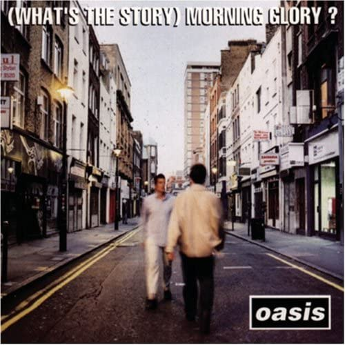

(What's the Story) Morning Glory?
Album review
December 8, 2022

Album review
December 8, 2022
私にとって自発的に聴いた最初の洋楽アルバムです。きっかけとなったのは以下の動画です。みのミュージックさんの動画では幅広いジャンルの音楽を取り扱っておられます。音楽において新しい刺激を求められている方は一度覗いてみては？
ここで軽くオアシスはどんなバンドなのか説明をしておきます。
イギリス出身のバンドで1991年に結成され、2009年に解散しました。 実の兄弟であるノエル・ギャラガーとリアム・ギャラガーが中心となって活動していたバンドです。 当時のイギリスではブリットポップというジャンルの音楽が流行っていました。ブリットポップとはWikipediaによると、
ブリットポップ（Britpop）またはブリットポップ・ムーブメント（Britpop Movement）は、1990年代にロンドンやマンチェスターを中心に発生したイギリスのポピュラー音楽ムーブメントである。ブリティッシュ・インヴェイジョン、グラム・ロック、パンク・ロックなど、イギリスのロック黄金期の影響を受けたバンドが多くデビューし、イギリス音楽界を盛り上げた。
ロック黄金期とは60年代や70年代のイギリス出身のバンドを指していると思われます。代表的なバンドで言うと、皆さんご存じのThe Beatlesなどですね。ちなみにギャラガー兄弟もBeatlesの猛烈なファンのようです。 そんなブリットポップというジャンルの中で最も有名なアルバムのひとつがこのアルバムになります。
ここからは私なりの全曲レビューをしていきます。
1 Hello
私はOasisに関しては有名な曲からとりあえず聴くということをはせずいきなりこのアルバムから聴き始めました。つまり私のOasisの初体験はこの曲です。
曲の冒頭ではのちに出てくるWonderwallのメロディーが流れていますが、もちろん初めてなのでわからず… 十数秒経ってギターのごつい音が流れてきたときにビビッときました。どことなくサウンドもレトロな感じがして懐かしい音楽を聴いた気持ちになりました。 この曲のイントロは最も衝撃を受けたイントロのひとつです。
この曲が一曲目に来るということがすごく重要な意味を持っていると思っています。一曲目って要は第一印象なわけですよね。実生活に例えると、初めて会う人の外見であったり初めて見た家具のデザインであったり… 第一印象が全てではないにしろ、とても私たちの潜在意識に影響を及ぼすたりバイアスを作ったりすると思います。なので現に私もイントロを聴いてもうこの曲が好きになりましたし、アルバムの一曲目としてはこれ以上ないくらいマッチしているのではないでしょうか。
疾走感があってリズミカルなところも良くて最高です。 演奏時間も短くぎゅっとまとめられていてカラオケでも歌いやすいですね。
2 Roll With It
これも大好きな一曲ですが、聴き始めた当初はあまり特徴がないなという印象でした。聞き返していくうちにどんどんハマっていきましたね。この曲に限らず、このアルバムには口ずさみやすいポップでキャッチーな曲が多いなという印象です。
3 Wonderwall
Oasisの最も有名な曲のひとつです。SpotifyではOasisの中で最も再生数が多い楽曲になります。この曲はバラードというくくりになるんですかね？ギターの気持ちが心地よくてイントロからアウトロまで気持ち良いです。
4 Don't Look Back In Anger
私がOasisの中で最も好きな曲のひとつです。この曲が嫌いな人はいるんですかねw？ Oasisの曲は9割方リアムが歌っていますが、たいていアルバムの中に1-2曲ノエルがボーカルを務める曲があります。それがこの曲です。 カラオケに行ったら必ず歌ってしまいますw
イギリスでテロが起きた時にはチャリティーライブで歌われたこともあります ネット上ではイギリス国歌とも言われるくらい国民にとって大切な曲なのかもしれませんね。
5 Hey Now!
この曲も初めて聴いたときはピンときませんでした。感覚ですが2曲目のRoo With Itに雰囲気が似ているなという印象がありました。そして残念なことに、このアルバムに触れてから幾分月日が経ちましたが印象は変わっておりません。ただ嫌いというわけではありませんが、好んで聴くことはないかなという程度です。 またこの曲の前のメンツがいかつすぎて少し見劣りしてしまうかなというのが正直な感想です。
6 The Swamp Song-Version1
歌詞は無く楽器演奏のみの短い楽曲です。"The Masterplan"というB面集に入っている'The Swamp Song'という曲の一部を切り取ったものです。休憩地点程度に捉えています。
7 Some Might Say
イントロがカッコいい。まあすべてがカッコいいんですが、私が思うにサビに負けず劣らずAメロがカッコいいと思うんですよね。癖になるというかとても印象に残ります。そしてカラオケで歌ったら意外とキーが高くて難しいですw
8 Cast No Shadow
カッコいい曲が続きますね。いつまで名曲が続くんだと感心させられます。この曲はノエルのコーラスが際立っている楽曲ではないでしょうか。
9 She's Electric
イントロが昔懐かしいというか、子供の頃テレビでよく聴いた気がするんですが気のせいですかね？それともよく似た違う楽曲なのかな？ この曲の第一印象は地味って感じで特段好んで聴くことはなかったように思います。そして今もそれは変わりませんが聴いたら名曲なんだなと改めて気づかされます。
10 Morning Glory
表題曲です。紛れもない名曲です。このアルバムはビッグネームが多すぎて埋もれがちですが、クオリティは最高級です。アルバムの中では一番ロックな楽曲だと思います。ひとつのアルバムの中で扱う楽曲の幅が広いのもポイントが高いですね。
11 The Swamp Song-Version2
Morning Glory とChampagne Supernovaをつなぐ短い楽曲です。つながりが全く違和感がなくてひとつの曲、一つの物語みたいな感じがします。
12 Champagne Supernova
締めの曲。控えめに言って最高です。歌詞も繰り返しの表現が多くて覚えやすいと思います。 夕暮れ時に、あるいは満天の星空をみながら聴いてみたい一曲です
全体を通して非常に完成度が高くムラが無いなという印象です。捨て曲(飛ばそうと思う曲)も無くて、個の曲としてみると好んで聴かない曲でもアルバムを通して聴くとスッと入って来るというか、曲順まで完璧な気がしますね。
ここからは雑誌やウェブサイトで発表されていた洋楽名盤ランキングなるものの結果をいくつか紹介したいと思います。
これらのサイトで下されている評価が全てではないですが、客観的にどれだけ評価されているのかを示す一つの指標になるでしょう。
これらのランキングはAll Timeのランキングなので年代縛りはありません。なんと、みのミュージックYoutubeチャンネルリスナーに投票を募った視聴者参加型のランキングで1位を獲得しています。日本では最も評価されている洋楽アルバムのひとつなのかもしれませんね。
この記事を読んでオアシスに興味を持った方はぜひこのアルバムをまずは聴いてみる事をおすすめします。屈指の名作ぞろいで必ず一曲は気に入る曲があるはずです。また洋楽に興味がある方もこのアルバムをきっかけに洋楽にハマること間違いなしです。